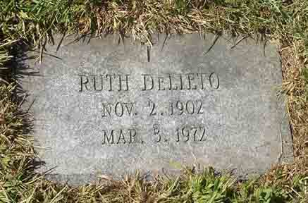

Census Data
| 1900 | 1910 | 1920 | |
| Jesse Rodolphus Vining | 27 | 37 | ? |
| Angeline Martha (Dickinson) Vining | 23 | 37 | dead |
| Nellie M. Vining | 3 | 13 | 22 [see note below] |
| Ruth E. Vining | 7 | 17 [see note below] |


Death Data
Gravestone for Jesse Rodolphus Vining. in Braman Cemetery, Newport, Newport County, Rhode Island (from Find A Grave):